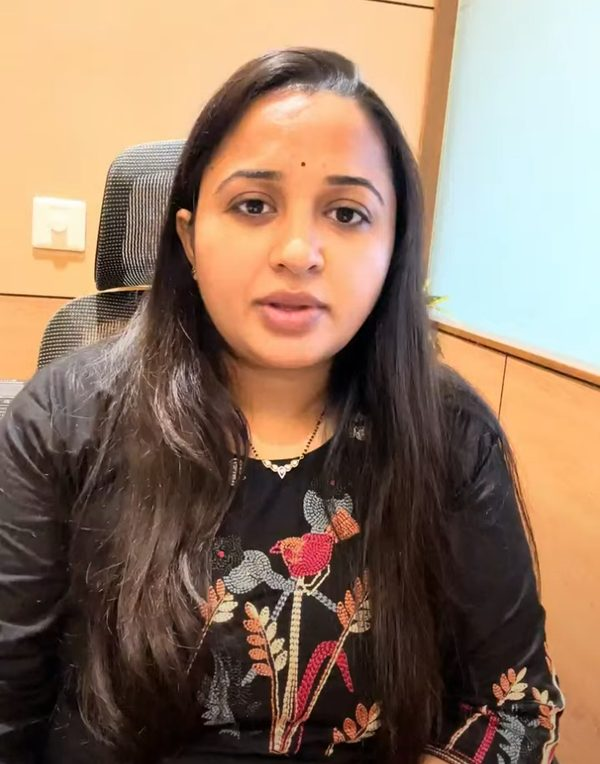
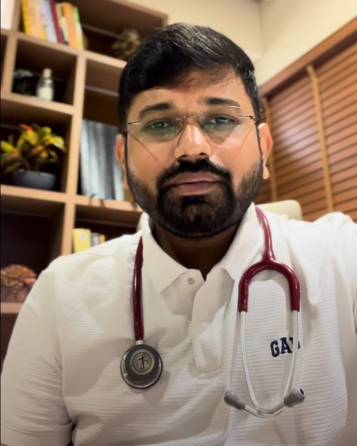

Compassionate Healthcare
for Your Little Ones
A modern children's hospital in Kudasan, Gandhinagar offering specialized newborn care, NICU support, vaccinations, and expert pediatric consultations — with a team that treats every child like family.

9:00 AM - 5:00 PM
Call: +91 88666 63709

Care
A Dedicated Pediatric & Neonatal Hospital in Gandhinagar
Shree NarNarayan Children Hospital is a modern, purpose-built children's hospital at Keshvam Square, Kudasan. Led by a husband-and-wife team of well-known Neonatologists & Pediatricians, we deliver complete care for newborns, infants, and adolescents — from routine OPD check-ups and vaccinations to advanced NICU support.
Newborn & NICU Care
Dedicated 12-bed NICU with round-the-clock neonatal support
Compassionate Pediatricians
Gentle, child-friendly approach in every consultation
Safe & Hygienic
Purpose-designed 4,000 sq ft hospital with high hygiene standards
Open All 7 Days
OPD from 9 AM - 5 PM, emergency support 24x7
Comprehensive Pediatric Care
From vaccinations to newborn intensive care — everything your child needs under one roof.
Newborn Care
Specialized care for newborns including routine check-ups, health screenings, feeding support, and early developmental assessments.
Vaccination / Immunisation
Complete immunization programs following the national schedule — BCG, DPT, OPV, MMR, Hepatitis and more — to protect your child.
General Pediatrics
Comprehensive care for common childhood illnesses including fever, cold, cough, infections, viral fevers, and allergies.
Child Development
Monitoring of physical growth, developmental milestones, and early behavioral screening to ensure healthy progress.
Respiratory Care
Treatment for asthma, bronchitis, pneumonia, and other respiratory conditions with nebulization support.
Skin & Allergy Care
Management of skin conditions, rashes, dermatitis, and allergies commonly seen in growing children.
Nutrition & Diet
Expert dietary guidance for infants and children — breastfeeding support, weaning, and age-appropriate nutrition.
OPD Consultations
Daily walk-in consultations for newborns, toddlers, and adolescents with experienced neonatologists and pediatricians.
Designed Around Your Child's Comfort
A calming, purpose-built 4,000 sq ft environment where children feel safe and parents feel reassured.
12-Bed NICU
Dedicated Neonatal Intensive Care Unit for premature and critically ill newborns.
10 Special Rooms
Private special and semi-special rooms with natural light and a calm atmosphere.
4-Bed General Ward
Comfortable general ward for children requiring observation and care.
Emergency Room
Round-the-clock emergency support for acute pediatric concerns.
In-house Medical Store
Convenient medicines and pharmacy support within the hospital.
Children's Play Zone
A welcoming reception and play area that keeps little ones comfortable while waiting.


Meet Your Child's Care Team
A well-known husband-and-wife team of Neonatologists & Pediatricians, now serving families in Gandhinagar.

Dr. Reshma Bhikadiya
Neonatologist & PediatricianDedicated to caring for newborns and children with a gentle, reassuring approach — from NICU stays to everyday wellness visits.

Dr. Avinash Patel
Neonatologist & PediatricianExperienced in neonatal intensive care and pediatric medicine, committed to healthy, happy childhoods for every family.
Stay on Track with Your Child's Vaccinations
Immunization is one of the most important steps in protecting your child. We follow the national immunization schedule under the guidance of expert pediatricians.
- Birth: BCG, Hepatitis B, OPV
- 6-14 weeks: DPT, OPV, Hepatitis B, IPV
- 9-12 months: MMR, Typhoid, Hepatitis A
- 16-24 months: DPT boosters, MMR, OPV
- Catch-up & travel vaccines on request

What Families Say About Us
We're proud to be the trusted choice for pediatric care in Kudasan and nearby areas of Gandhinagar.
"The doctors patiently explained everything about my newborn's feeding and growth. The hospital is clean, calm, and the staff treats you like family."
"We got our daughter's vaccinations done here. Very smooth process, minimal waiting, and the play zone kept her relaxed before the visit."
"Highly reassuring NICU team. Our premature baby received excellent round-the-clock care. Forever grateful to the doctors and nurses."
We're Here When You Need Us
Our OPD runs 7 days a week, and our emergency and NICU teams are available around the clock — because a child's health never waits.
Frequently Asked Questions
Answers to the questions parents ask us most.
Our OPD is open Monday to Sunday from 9:00 AM to 5:00 PM. Emergency and NICU care are available round the clock.
Walk-ins are welcome during OPD hours. For vaccinations, NICU visits, or consultations with a specific doctor, we recommend calling +91 88666 63709 to book a slot.
Yes. We provide complete immunisation following the national schedule, including BCG, Hepatitis B, OPV, DPT, MMR, Typhoid, and Hepatitis A.
Yes, our hospital has a dedicated 12-bed NICU with round-the-clock neonatal support, along with special and semi-special rooms, a general ward, and an emergency room.
Call our emergency line at +91 88666 63709 immediately. Our emergency room and neonatal team are available to assist round the clock. Where possible, call before you travel.
Yes, the hospital is located at Keshvam Square, Kudasan, with easy access from SMVS Hospital Road. We also have an in-house medical store for your convenience.
Book an Appointment
Send us your details and our team will reach out to confirm your visit. For emergencies, please call us directly.
Our Location
Keshvam Square, 301-304,
SMVS Hospital Road, Kudasan,
Gandhinagar, Gujarat 382426
Working Hours
OPD: Monday - Sunday
9:00 AM - 5:00 PM
Emergency: 24 Hours
Phone
+91 88666 63709
+91 85307 31365
Call for appointments & emergencies